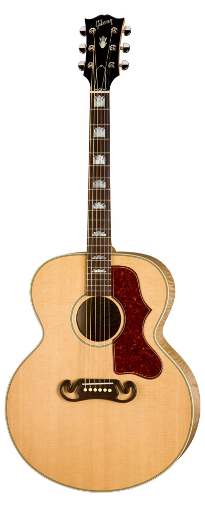

Bemutatkozás
Foki Szilárd vagyok, a 12.A osztály tanulója, szoftverfejlesztő és -tesztelő szakon. Azért választottam ezt a szakot, mert mindig is érdekelt az informatika és az, hogy hogyan működnek a különböző programok és alkalmazások.
Szoftver fejlesztő és tesztelő

Foki Szilárd vagyok, a 12.A osztály tanulója, szoftverfejlesztő és -tesztelő szakon. Azért választottam ezt a szakot, mert mindig is érdekelt az informatika és az, hogy hogyan működnek a különböző programok és alkalmazások.